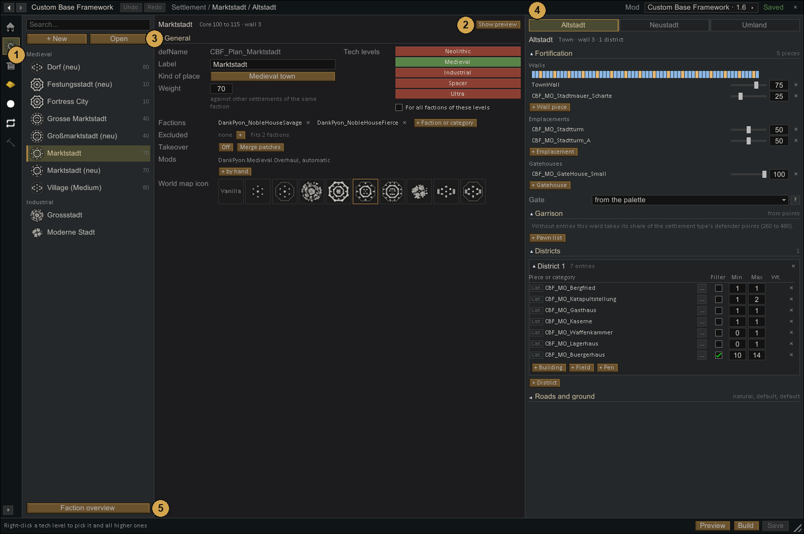
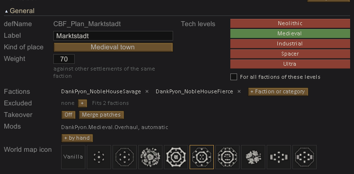
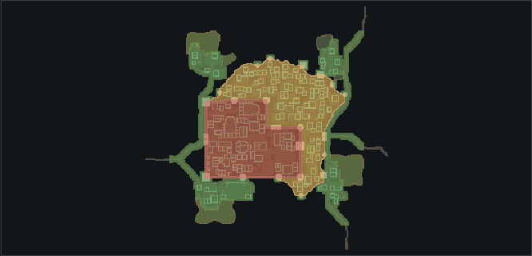
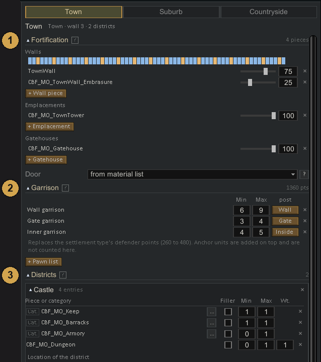
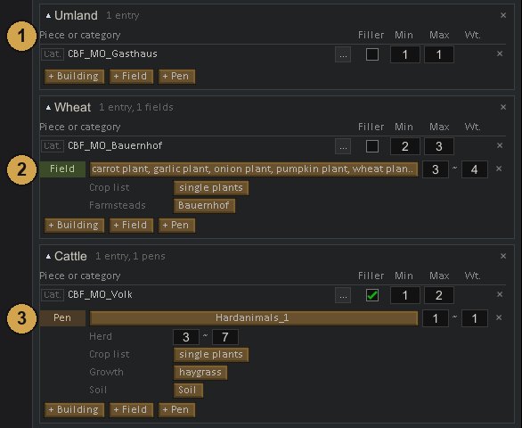
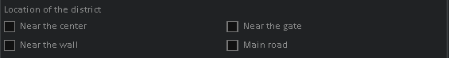

Settlements
Settlement
A settlement plan defines what a place needs: its building mix, fortifications, districts and defenders. The generator uses those requirements to arrange a village, town, fortress or camp on the actual map. You control the composition and placement preferences; the terrain and available space determine the final positions.
A settlement type is built from three layers:
- Wards are the rings of the place: the old town in the middle, the suburb around it, the countryside outside.
- Districts are groups of buildings inside a ward, for example a market quarter or a row of farmsteads.
- Entries in a district name a category or a single piece and how many of it to build.

- List of settlement types, grouped by their lowest tech level. The number on the right is the weight. A red row has errors that stop the type from being built; it shows the number of errors instead of the weight.
- Preview. Off by default, because planning a large town takes a few seconds. Show preview draws the plan on a flat map, Reroll plans it again with a new seed, Wards colours the rings.
- General: name, kind of place, tech levels, factions and more. See General.
- Wards on the right: one tab per ring of the settlement. See Wards.
- Faction overview below the list shows which faction gets which settlement, see Factions.
The buttons at the bottom right:
- Save writes the settlement type into its file.
- Build finds a matching tile on the world map and places a settlement of this type there.
- Preview opens the preview large in its own window, with legend and tally.
- Show loot shows the loot of the settlement of this type that was built last. See Loot of a built settlement.
Settlement types from CBF or other mods can be changed too. The save button then reads Save as patch and stores your changes as a patch in your own mod, see Changing content of other mods. Copy into my mod instead makes an independent copy under a new name.
Loot of a built settlement
After Build, the button Show loot shows what the loot of the settlement built last is worth in silver: in total, per ward and per kind of goods. The value is counted while the settlement is built and saved with it. Medieval Overhaul containers that only fill when searched are not included.
What the generator handles by itself
You do not set these things. The generator does them on its own.
- Buildings that belong at the wall, such as barracks, dock onto the town wall with their open side. They are only built where that side touches the wall. The wall stays and the building gets a door onto the walkway.
- An open side of such a building that does not touch the wall is closed with the building's own wall.
- A medieval old town is made of 2 to 4 overlapping blocks, which gives L, T and stepped outlines instead of a plain rectangle. This also holds for towns without suburb islands if the wall is thicker than 3 cells. Every straight wall stretch, every projection and every indent is at least 16 cells long (a third of the town width for small towns).
- If there is no room for a field right at a farmhouse, the field may lie up to 30 cells away. When no road passes it, its gate faces the farmhouse.
- Wall parts cut off by a mountain turn into rock. Large rock pockets behind the wall get a postern (a small side gate). Small rock islands that touch the planned wall stay on the wall line and outside the town and replace the wall there; only the part inside the town is removed.
- Rubble inside the settlement is cleared.
- Modern towns always have wards shaped like a spider web: 7 to 10 corners with sagging sides, also with a sandbag or barricade line. They never get gatehouses; roads run through gaps.
- Medieval settlements at the coast or on a wide river get a harbor with jetties, fishing huts, harbor store, harbor master and boat sheds, linked to the town by a path. The settlement type lists the harbor buildings under
harbor, see Settlement types in XML. - Buildings whose graphic only has one direction, such as Medieval Overhaul carts, are never rotated.
- Stoves, ovens and workbenches face into the room, and every thing gets a material it can be made of.
General

- Label: the name players see.
- Kind of place: medieval town, modern town or camp. Click to switch to the next kind.
- Weight: how often this type is picked among all settlement types a faction can get.
- Map size: edge length of the map this settlement type asks for, 150 to 400. The larger of this and the world setting is used.
- Core size: edge length of the settlement core in cells, as a range. The suburb and the countryside grow around it.
- Tree share: share of the wild trees inside the settlement that stay standing, from 0 to 1. 0 clears them all.
- Material list: what the generator uses for walls, doors, gates, fences, roads and roofs it builds itself, see Material lists. Required: without one the row turns red and the type is switched off.
- WD tier: only with World Domination 2.0 active. A dropdown with the tiers of World Domination, a single tier or a range such as Tier 1 to 2. The tier this type stands for, see Compatibility.
- WD type: only with World Domination 2.0 active. The World Domination settlement types this plan stands for, such as mining camp or slave village. Only the types of the chosen tier are offered; empty means any type.
- No WD loot: only with World Domination 2.0 active. Switches off the extra loot World Domination gives settlements of this type.
- RIAF holding: only with A Rim of Ice and Fire active. None, Village, Town or Garrison. Makes this type the plan for holdings of that kind, see Compatibility. A type with a holding kind is not used for normal settlements.
- Ideoligion style: only with Ideology active. Furniture gets the style of the owning faction's ideoligion.
- Camp types: only for the kind camp. The quest sites this plan builds, such as bandit camps, outposts or work sites.
- Tech levels: which ages the plan fits. A click switches one level on or off, a right-click picks this level and all above. Pawn lists use their members of the highest tech level at or below the settlement's level.
- For all factions of these levels: the plan serves every faction of a ticked tech level, unless that faction has plans of its own.
- Factions: factions or faction categories that get this plan by name.
- Excluded: factions that never get it.
- Mods: the mods the plan needs. Most are found automatically, + by hand adds more.
- World map icon: the symbol of this place on the world map, tinted in the faction colour. Vanilla keeps the faction's own symbol.
How these fields decide which faction gets which settlement is explained on Factions.
Wards
A ward is one ring of the settlement: the old town behind the high wall, the suburb behind a lighter one, the countryside around them. The innermost ward is protected best and filled first.

In the preview, Wards colours the three rings: the old town red, the suburb ochre and the countryside green. Each settlement type has at most one ward of each kind, and the kind of a ward cannot be changed, see What you can change. The + next to the ward tabs adds a ward the type does not have yet.
Each ward tab has the sections Fortification, Garrison, Districts and Roads and ground.

Old town shapes
Only in the old town of a medieval settlement type. Each picture shows one outline the old town can take, for example rectangle, L-shape, cross or the grown form. By default only the grown form is selected. Click a shape to allow it, click again to exclude it. At least one shape stays selected. In XML this is the field coreShapes of the settlement type; a list of the values Grown, Rectangle, LShape, TShape, UShape, Cross, Step and Octagon. Empty means Grown only, and a name that is not in this list is reported as a config error.
Fortification
- Walls: the wall pieces of this ring. Several entries give a wall that varies along its length; the slider sets each entry's share.
- Emplacements: towers and other works in the ring. The generator spaces them itself, corners first.
- Gatehouses: built wherever a road crosses the wall.
- Door: the door that closes the passages in the wall. Empty uses the door of the material list.
Modern towns and the countryside have no fortification.
Obstacles outside the ward
Outworks place small obstacles around the outside of a wall or open ward boundary. They use 1×1 pieces, with settings for distance, intervals between groups and clearance around gates. Use the ward’s outworks entries in XML; Outworks includes an example. These obstacles are separate from the defensive positions distributed along roads inside the ward.
Garrison
The garrison is the set of defenders of this ward. Each row names a pawn list (a set of pawn kinds), with a min and max count and a post: Inside, Wall or Gate. The section header shows the point value of the garrison.
A ward with a garrison ignores the defender points of the settlement type. A ward without entries takes its share of those points. Pawns from Pawn anchors in the pieces come on top.
How the defenders behave:
- Every ward defends itself. Defenders do not gather in the center and do not storm out together.
- Guards on the wall and at the gates hold their spot, shooters stay at the embrasures.
- Crews of ballistas, catapults and trebuchets stay at their gun, even when many defenders have fallen.
- Defenders of a settlement cannot be recruited as prisoners.
Defences
Defences spread over the whole ward: turret posts, sandbag nests, bunkers. Each entry names a category or one piece and a count. The first one stands at a random spot along a road; every further one goes where it is farthest from those already placed. Use districts instead when a defence belongs to one district only.
The editor has no field for defences. They are set in XML in the ward's defenses list, see the ward field reference.
Districts
A district is a building programme: a list of what to build in one part of the ward. Districts without a name of their own are numbered, District 1, District 2 and so on.

- Buildings: each entry is a category (marked Cat.) or one specific piece, with min and max for how many. A single piece also has a weight (Wt.) against the other pieces of its category; for a category entry the pieces' own weights decide. An entry marked Filler may be built beyond its max to fill the space left at the end, and only half of its min is required.
- Field: a crop plot laid out around the buildings named under Farmsteads. The plants come from single plants or from a Crop list, see Loot. Fields only work in the suburb and the countryside.
- Pen: animals from a pawn list, the Herd size, and what grows inside (Growth, Soil). Pens only work in the countryside.
- Mine: a tunnel with chambers dug into the rock from a building of the district. You set the ore and its share, length and width of the tunnel, number and size of the chambers, rock chunks, the buildings it may start at (Starts at), and the things inside. Things opens a window with a sketch of the mine and one column per place: Entrance (the first cells of the tunnel, right behind the entrance at the hut), Tunnel (along the tunnels, only where there is room to pass) and Chamber (in a chamber at the end of a tunnel, small things by the wall). Each entry is a thing or an object list, with material (empty takes stone or wood of the map), count, and optional content with an amount, for example iron on a shelf. ⇄ moves an entry to another place.
- Location of the district: tick where the district should start: Near the center, Near the gate, Near the wall or Main road. Several ticks count equally; the district looks for a spot that suits all of them. Nothing ticked means a random spot away from the other districts. In XML the fields are numbers; only their ratio counts, so
1and0cover every normal case.

+ Building, + Field, + Pen and + Mine add rows. + District below the last district adds a new one. The … button next to a category shows the pieces it covers.
Roads and ground
- Ground: the ground between the houses. Empty keeps the map's own ground.
- Paths: the surface of lanes, squares and gate passages in this ward. Empty uses the standard surface.
- Kerb: the surface of the outermost cells of lanes, squares and gate passages. Empty uses the path surface for the whole width.
Ideoligion conditions on entries
With Ideology active, every building entry of a district has a small I button. It adds memes or precepts the owning faction's ideoligion must have (only with) or must not have (not with). The entry is then only built when the condition holds, for example a slaughterhouse only for factions with a meat preference. The button is highlighted when a condition is set; its tooltip lists them.